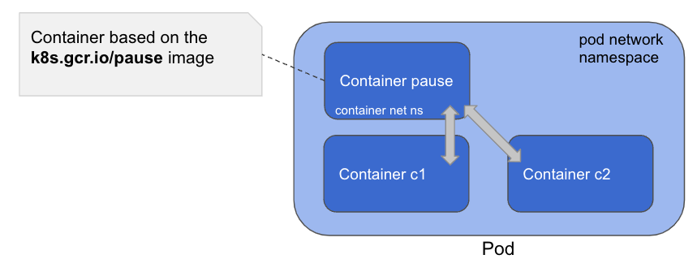
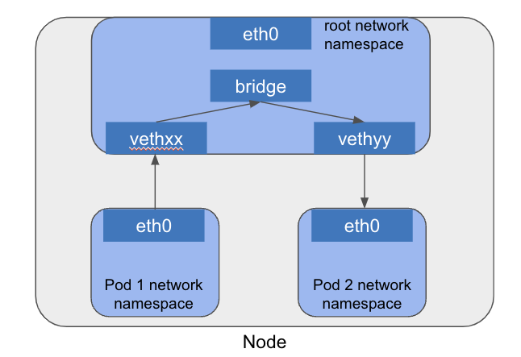
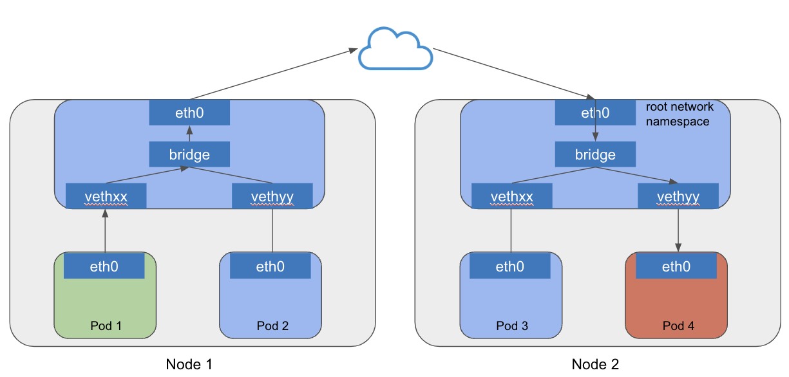
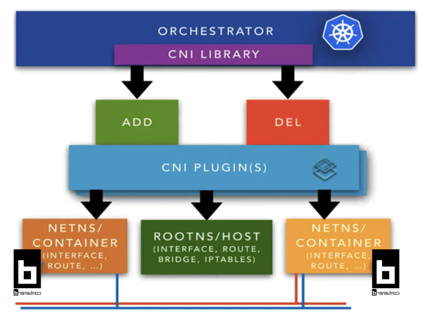
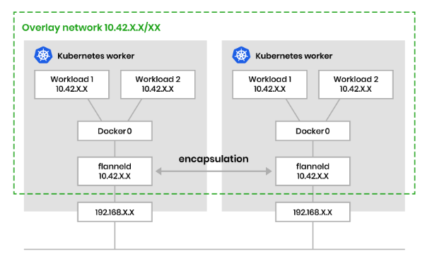
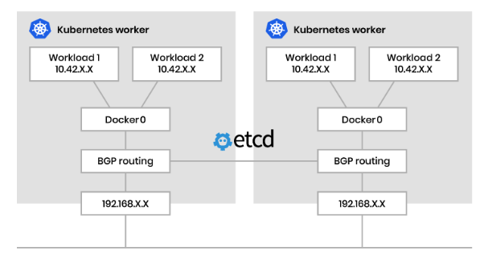
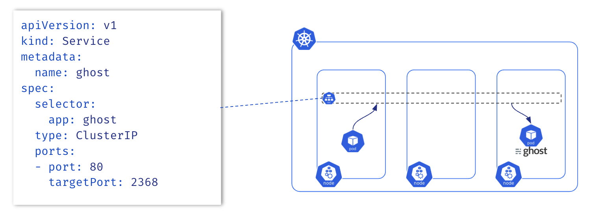
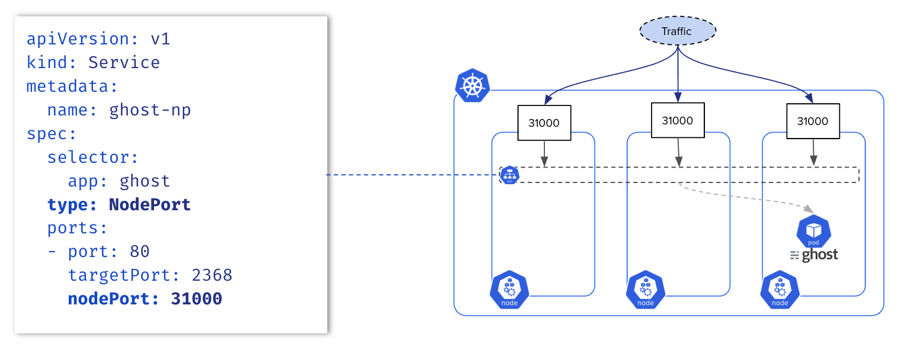
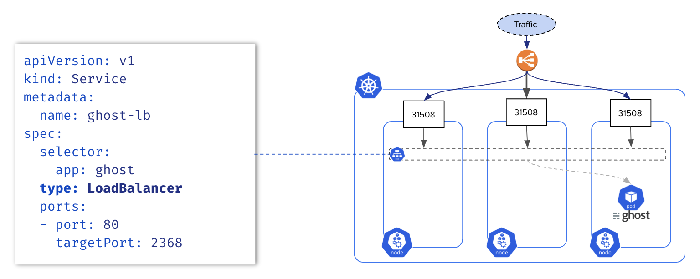
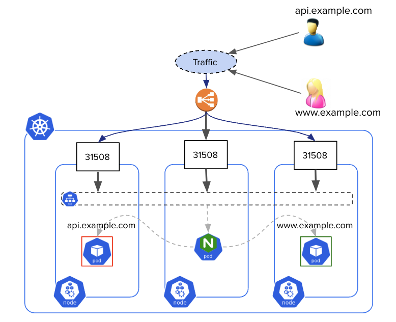

Networking
This section is a refresher that provides an overview of the main Kubernetes resources related to networking. At the end of this section, please complete the exercises to put these concepts into practice.
Kubernetes Networking Model 🔗
In Kubernetes, a network plugin ensures communication between the Pods. Each network plugin must implement the following requirements:
- all Pods can communicate with all other Pods without NAT
- all Nodes can communicate with all Pods without NAT
- the IP that a Pod sees itself as is the same IP that others see it as
Communication Types 🔗
There are different types of communication within a cluster:
- Container to container
- Pod to Pod
- on the same Node
- on different Nodes
- Pod to Service
- External to Service
- NodePort service
- LoadBalancer Service
- Ingress Controller
Container to Container Communication 🔗
When a Pod is created, it has its own network namespace which is set up by a pause container. This container is special as it does not run any workload and is not visible from the kubectl commands. The other containers of this Pod are all attached to the pause container’s network namespace and are thus communicating through localhost.

Pod to Pod on the Same Node 🔗
Each Pod has its own network namespace and they communicate via a virtual Ethernet (veth) pair connected to a bridge on the host. This setup allows Pod-to-Pod traffic to be switched locally without leaving the Node.

Pod to Pod Across Different Nodes 🔗
The network plugin ensures that each Pod’s IP is routable across the cluster, using encapsulation, overlays, or native routing. Packets travel across the network infrastructure between Nodes before reaching the destination Pod’s virtual interface.

Network Plugin 🔗
A Network plugin is mandatory in a Kubernetes cluster. It ensures the communication between Pods across the cluster, whether they are on the same Node or on different Nodes.
Among the network plugins available, Kubenet is a basic and simple one, it has a limited set of functionalities and cannot be used with kubeadm. All other major plugins implement the Container Networking Interface (CNI) specification.
- https://github.com/containernetworking - CNCF incubated project
- https://cncf.io/projects - Manages containers’ network connectivity
- More info: https://bit.ly/about-cni-plugins

Container Network Interface (CNI) 🔗
CNI provides a standard interface for configuring network interfaces in Linux containers, allowing plugins to implement their own advanced functionalities such as routing, network security, and more.
Popular CNI plugins include:
- Cilium - advanced security, eBPF-based
- Calico - policy engine, supports BGP
- Flannel - simple, uses VXLAN by default
These plugins are typically:
- Installed as a DaemonSet
- Designed for different use cases (low latency, enhanced security, observability, etc.)
- Can use encapsulation (L2/VXLAN) or non-encapsulated (L3/BGP) modes depending on your setup and requirements
Communication Types 🔗
Encapsulated (VXLAN) 🔗
Traffic between Pods is wrapped (encapsulated) in another packet and routed through an overlay network.

Unencapsulated (BGP) 🔗
Traffic is routed directly between nodes without encapsulation, using protocols like BGP to advertise Pod networks.

Service 🔗
A Service is a Kubernetes resource that provides a stable networking endpoint to expose a group of Pods. Services ensure that communication to a group of Pods is reliable, even as Pods are dynamically created or destroyed.
Main types of Services:
- ClusterIP (default): exposes the Service internally within the cluster. Not accessible from outside
- NodePort: exposes the Service on a static port on each Node of the cluster
- LoadBalancer: creates an external load balancer (only available when using a cloud provider) to expose the Service to the internet
Key Characteristics:
- Each Service is assigned a Virtual IP (VIP), which stays the same during the lifecycle of the Service
- Services use labels and selectors to dynamically group Pods
- kube-proxy configures network rules on Nodes to route traffic from the Service to the appropriate Pods
Service of Type ClusterIP 🔗
A Service of type ClusterIP exposes a group of Pods inside the cluster, so that other Pods can reach them.

Service of Type NodePort 🔗
A Service of type NodePort exposes a group of Pods to the external world, opening the same port on each Node.

Service of Type LoadBalancer 🔗
A Service of type LoadBalancer exposes a group of Pods to the external world through a load balancer. This feature is only available for clusters running on cloud providers.

Endpoints 🔗
Endpoints resources are the list of IP:PORT of the pods exposed by a Service. Endpoints are updated each time a Pod is created/updated. The commands below create a Deployment with 3 Pods and expose them with a Service.
Creation of a deployment
kubectl create deploy ghost --replicas=3 --image=ghost:4
Exposition through a service
kubectl expose deploy/ghost --port=2368
We can query the Endpoints directly.
$ kubectl get endpoints ghost
NAME ENDPOINTS AGE
ghost 10.0.0.210:2368,10.0.0.25:2368,10.0.1.252:2368 51s
Or, get the list of Endpoints from the Service’s details.
$ kubectl describe svc ghost
Name: ghost
Namespace: default
Labels: app=ghost
Annotations: <none>
Selector: app=ghost
Type: ClusterIP
IP Family Policy: SingleStack
IP Families: IPv4
IP: 10.107.128.221
IPs: 10.107.128.221
Port: <unset> 2368/TCP
TargetPort: 2368/TCP
Endpoints: 10.0.1.252:2368,10.0.0.210:2368,10.0.0.25:2368
Session Affinity: None
Internal Traffic Policy: Cluster
Events: <none>
Pod to Service Communication 🔗
By default, kube-proxy sets the network rules when we create a Service. These rules allow access to the backend Pods when accessing the Service.
kube-proxy currently uses iptables as the default data-plane mode, but another mode can be enabled instead, such as IPVS or eBPF (via Calico or Cilium network plugins).
This article provides additional information about how the iptables rules are created.
Ingress Controller 🔗
An Ingress Controller is a reverse proxy exposing ClusterIP services to the outside. It’s usually the single entry point exposed by an external load balancer.

An Ingress Controller is configured with resources of type Ingress which allows L7 routing via the domain name or a path within the URL. Below is an example of Ingress specification. It redirects all traffic targeting the /api endpoint to the api Service listening on port 80.
apiVersion: networking.k8s.io/v1
kind: Ingress
metadata:
name: ingress
annotations:
nginx.ingress.kubernetes.io/rewrite-target: /
spec:
ingressClassName: nginx
rules:
- http:
paths:
- path: /api
pathType: Prefix
backend:
service:
name: api
port:
number: 80